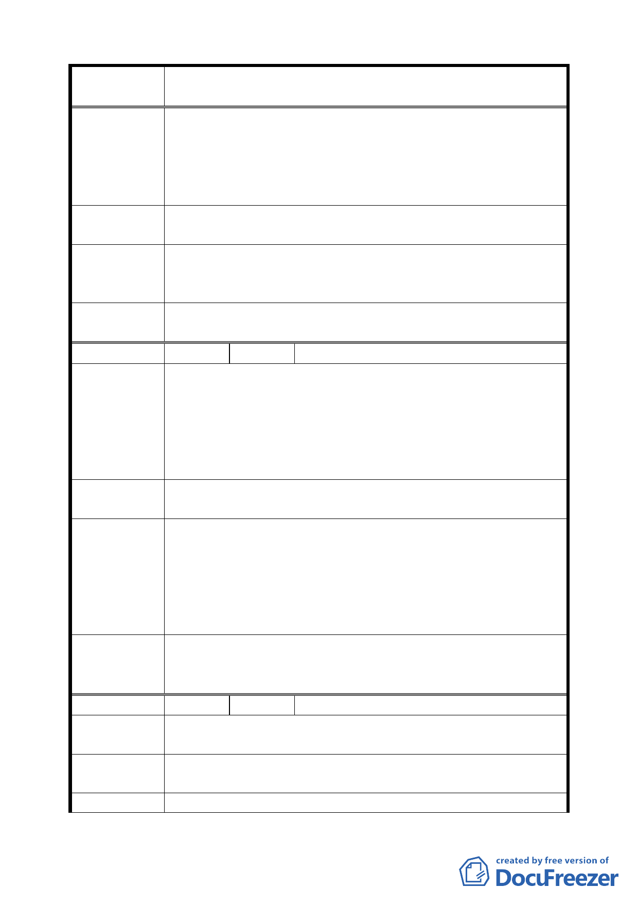

案 名 臺北市文山區都市計畫通盤檢討（主要計畫）案
（ 主 興 6 ） 2766800 與 2766600 之間）。
建議理由：
範圍內之土地坡度甚陡，環境敏感不宜為住宅區，建議併「主
興 6」變更為公園。
建議辦法
本區域之坡度較「主興 6」更為陡峭，且部分為墓地，實無
建路造屋之可能及必要性，建議併入「主興 6」執行。
專 案 小 組 本陳情土地均屬私有土地，以市政財政而言無法負擔龐大徵
審 查 結 論 收開闢費用，且南側已有專案變更 10 公頃公園用地，同意市
（ 9 4 . 7 . 7 ） 府意見維持原住宅區計畫。
委員會議
決議
依專案小組審查結論辦理。
編 號 ９ 陳情人 余姿嬌、傅松柏（09430073200）
建議位置：興安段一小段 430、459 地號。
建議理由：
陳 情 理 由 上開土地係毗連「住三」之平地，早應編為「住三」而不該
（ 主 興 7 ） 編為師專用地，且經教育局於 89 年間已致函發展局因無設校
需要，請納入通盤檢討在案。惟發展局竟延宕多年始變更為
「住三特」，致地主雙重受損，該局難免有怠忽職守之咎。
建議辦法
變更為「住三」用地，並提前辦理細部計畫，彌補地主長達
30 餘年無法使用土地之損失。
因市府仍須協調並整合地主意願，無法配合文山區通盤檢討
專案小組
審查結論
（94.12.21）
案之審議時程，擬個案繼續處理，再提專案小組討論，其餘
專案小組審議結論，則先行提報委員會審議。
附帶決議:師專用地請於 6 個月內提出具體方案，否則基於時
程考量，將解散專案小組並請市府重新依法定程序辦理公開
展覽。
委員會議
決議
師專用地涉及地主意願整合及開發方式可行性評估等議題，
因無法於本計畫審議前完成檢討計畫，退由市府另案辦理；
並刪除本案「主興 7」。
編 號 １０ 陳情人 高逸松（09430074500）
陳情理由
（主興 7）
變更師專用地無道路用地，將來公園及住宅無路可通。
建 議 辦 法 變更部分為道路用地。
專 案 小 組 同編號 9。
八